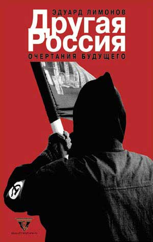

Эдуард Лимонов • Другая Россия • вне серий • 18.04.2003

Написанные в лефортовской тюрьме и обращенные к нам бескомпромиссные лекции культового современного русского писателя и общественного деятеля Эдуарда Лимонова заставляют нас вновь задуматься о социальном устройстве и культурных традициях, от которых зависит наше ближайшее будущее.
Пресса и контекст
Лимонов в Петербурге
Накануне по всему Питеру можно было наблюдать плакаты с двусмысленным лозунгом «Лимонов в Петербурге!» и тюремным портретом писателя. В действительности же в Петербурге готовилась презентация новой книги Лимонова «Другая Россия» и вечер, посвященный писателю и его скорому приговору в саратовском суде. Собралось человек двести: треть нацболов, треть журналистов и треть питерской богемно-тусовочной публики. Презентация началась с короткого динамичного видео: тюремное интервью Лимонова + хроника наиболее эффектных партийных беспорядков + провидческое стихотворение «Саратов», написанное еще в 60-ых – всё это под ритуальную алтайскую музыку (место ареста) и новые композиции группы «АукцЫон». Вечер открыл Юрий Лейдерман (партийное имя «товарищ Абель»), в 80-ых издатель подпольного рижского арт-журнала «Третья Модернизация», в 90-ых – редактор известной эротической газеты «Ещё», а в настоящий момент – гауляйтер лимоновской партии. Он признался, что Лимонов для него это прежде всего «пророк», а не политик и сравнил его с античными «героями», которым завидовали даже боги, потому что они бросали вызов самой судьбе, всевластному року. Русскую нацию, согласно Абелю, история приговорила к ликвидации, но Лимонов начал создавать другую, новую нацию на основе пассионарного и маргинального молодежного меньшинства.
Вторым выступал писатель (в 96-98 зам.редактора «Лимонки») Алексей Цветков от издательства «Ультра.Культура», выпустившего «Другую Россию». Избранные места:
… Позволю себе пару слов, поясняющих, почему эта книга для нас не случайна и почему мы не могли пройти мимо. Наше издательство, кстати, и началось с предыдущей книги Лимонова «В плену у мертвецов». Издательство, созданное Ильей Кормильцевым, изначально было ориентировано на контркультуру, преимущественно переводную, так как Илья во-первых талантливый переводчик, хотя и известен всей стране он прежде всего как автор хитов группы «Наутилус Помпилиус». Контркультура как место для символических и ритуальных форм освобождения, обособления, автономии. В настоящий момент изначальные приоритеты издательства уточнены и детализированы. К контркультуре добавились книги по радикальной и альтернативной социальной теории и практике, по технологии и теологии повседневного освобождения. И среди этих книг всё больше тех, что написаны здесь, по-русски и не требуют перевода …
… Мы хотели бы предложить читателю целый веер «других возможностей», альтернативных практик: художественных, политических, поведенческих, дополняющих друг друга и резонирующих в большом проекте Другой Культуры, а значит и Другого Общества. Именно поэтому у нас, кроме чисто литературных текстов Берроуза, Лидии Ланч, Стюарта Хоума, Брета Истона Эллиса, планируются буквально до лета две книги Гейдара Джемаля, глубокого философа исламской революции, сборник «Аллах не любит Америку», где собраны все мусульманские претензии к США за последние тридцать лет, «Восстание среднего класса» Бориса Кагарлицкого – наиболее адекватного из антиглобалистов, пишущих по-русски, двухтомная «Антология современного анархизма и левого радикализма», «Хакерская Этика» Пеки Химманена, автобиография Хьюи Ньютона, культового человека, создавшего «Черных Пантер» и одновременно дружившего с Жаном Жене и Фиделем Кастро. И много чего такого еще выходит у нас. В саморекламе главное – вовремя остановиться…
После этого перечисления не стоит, думаю, объяснять, почему Лимонов нас очень интересовал. Тем более, что книга его называется «Другая Россия». Тем более, что был целый сюжет с петербургским издательством «Амфора», куда в последний момент, когда были уже готовы сигнальные экземпляры, пришли некие строго одетые люди из неких вообще не смешных служб, состоялся неформальный мужской разговор и книгу решили прямо в типографии остановить …
…Лимонов в нынешнем своем положении это трикстер, то есть фигура, которая провоцирует Систему, ЭТУ Россию, чтобы сделать всё её не очевидные, скрываемые стороны явными, вопиюще наглядными. Лимонов сегодня дорого платит за то, чтобы избавить нас от сентиментально-уповательных иллюзий относительно нашего настоящего и будущего. Трикстер избавляет от иллюзий по крайней мере тех, кто стремится к такому избавлению, кто хочет «реальности как таковой». Именно поэтому мы взялись за «Другую Россию». Нам очень интересны все, кто чувствует, что Система исчерпала свой «ресурс нового», что впереди бесконечные повторы, римейки уже бывшего, отработанного и что буквально от каждого из нас зависит, как долго это продлится, с какой скоростью на смену слишком ЭТОМУ придёт по-настоящему ДРУГОЕ…
… Вот так будет выглядеть книга, прочесть которую вы сможете уже через несколько дней (аплодисменты в зале), как видите мы сделали адекватную и сердитую обложку, без поп-арта …
Следующим взял слово кинокритик и постоянный автор «КоммерсантЪа» Михаил Трофименков, известный еще и тем, что в середины 90-ых в различной прессе активно «бил в набат» по поводу «опасной» моды на национал-большевизм. Михаил даже вспомнил, как, не сойдясь в идеологии, дрался у памятника Маяковского с Дугиным и их растаскивал Курехин. Своё «изменение отношения» к Лимонову он назвал большой победой последнего, сказал, что любой приговор по его делу будет поражением власти, а самого Лимонова, цитируя определение субкоманданте Маркоса, предложил считать «военнопленным на войне объединенной власти против объединенного народа».
После него, в своей артистично-игровой манере выступал известный питерский художник и коллекционер Сергей Бугаев («Африка»), сравнивший Лимонова с Эзрой Паундом и Нельсоном Манделой и высказавший предположение о том, что кто-то обязательно выдвинет Эдуарда кандидатом в президенты на ближайших выборах.
Дальше смотрели видео последней акции лимоновцев: несколько активистов залезли в Москве на крышу станции метро «Лубянка» напротив главного офиса ФСБ, натянули там пятиметровую растяжку «Свободу Лимонову!» и звонили прямо с крыши по мобильнику во все редакции. В отделении милиции главным образом допытывалась, сколько нацболам заплатили, и когда кто-то в шутку ответил: «три тысячи баксов», милиция возмутилась: «Чего п…дишь, мы за три тысячи баксов сами бы любой лозунг где угодно растянули!».
Потом выступал участник «Кино» и «Поп-Механики» Алексей Рыбин, сказавший что его ощущение жизни сегодня – пессимистическое и приговор Лимонову, который прозвучит на днях, заранее предрешен. На трибуну с нацболовским флагом поднимались писатели, журналисты, товарищи и поклонники Лимонова. Сочувствующий депутат законодательного собрания сверкнул афоризмом: «У нас есть две большие проблемы. Первая – люди не думают. И вторая – люди думают!». Литератор Коняев назвал «партию Лимонова» его главным произведением. Всё смотрели трэш-видео Епифанцева-Шишкина «Тайд или отрубание головы!» и лирический документальный фильм о ежедневной жизни московского бункера лимоновцев, снятый для предстоящего берлинского фестиваля документальных фильмов.
Рецензия на книгу Эдуарда Лимонова «Другая Россия» (inache.net)
Поскольку фирменный стиль Лимонова – преломлять историю в личностях, начну с «подражания классику». Познакомились мы, кажется, ровно 10 лет назад, в подготовке к московской демонстрации 9 мая 1993 года, когда он собирал разношерстную колонну «молодых радикалов». Слово «национал-большевик» в обиход еще не вошло, не было и партийного нацбольского флага – несли самые невероятные красно-черные знамена с руническими знаками, на которые оторопело таращились окружившие нашу горстку коммунисты и журналисты. Коммунисты, впрочем, предпочли сразу же держать дистанцию и отстали, так что наша колонна, во главе с вооруженным мегафоном Лимоновым, похоже, первой дошла до Вечного огня. Там совершили ритуал: опустили знамена, преклонили колено, помолчали. Сил на взятие Кремля у нас было явно недостаточно, поэтому ментовские кордоны в тот раз вели себя сдержанно. Потом пили водку в мастерской какого-то художника, обсуждая самые метафизические, сверхполитические телеги, пока одному нашему общему другу не взбрело в голову наехать на Сталина. А хозяин мастерской был грузином…
1992-93 годы – вообще было самое живое, веселое и интересное время. Да, мы считали себя непримиримыми противниками установившейся власти, но политика воспринималась нами как творческая импровизация, это был кипящий бульон новых идей и прозрений, жажда прямого действия. Парадокс состоял в том, что мы первыми использовали ту свободу, с которой сами давшие ее власти порою не знали что делать. Наверное, так и выглядят все революции. Потом же все происходившее «на поверхности» – особенно после октября 93-го: появление Думы, олигархических групп и т.д., – то же самое стало отражаться и в «революционной оппозиции». Она тоже все более застывала в «структуру» – с неизбежными в таком случае «расколами». А творческим людям всякая партийная структуризация нужна как рифма для хайку.
С тех пор много воды утекло, сменилась даже не одна эпоха, и все участники того шествия разошлись по своим, самым разным путям. И сейчас совсем не время продолжать разговор в этом стиле, обсуждая чьи-то личности или собственно лимоновское «базлание» в чей-то адрес. Потому что очень легко присоединиться к этому странному паноптикуму, царящему ныне в культуре и политике. Где «интеллигентные люди» смакуют такое, на фоне чего герой «Эдички» просто невинный ангел, – но до сих пор кривя губы попрекают его тем романом. Где «патриоты», воротящие нос от «экстремиста» Лимонова, один другого шире рвут за народ рубахи на груди – стараясь только не задеть при этом дорогой галстук.
Отвечать что-либо такого сорта людям бесполезно и бессмысленно – все равно не поймут, они живут в своем мире (хотя думают, что и все живут в нем). Вообще, до тех пор, пока Лимонов не выйдет на свободу, следовало бы ввести этический мораторий на любую критику его художественных произведений. Но совсем недавно вышедшая «Другая Россия. Очертания будущего» – дело другое, это, пожалуй, наиболее программное его произведение, максимально свободное от стилистики эротических мемуаров. И, как говорят, именно за изложенные там идеи его и упекли («за покупку оружия» надо бы пересажать тысячи бандитов по всем городам – но наша «диктатура закона» оказалась весьма избирательной). Видимо, эта книга задела какие-то слишком чувствительные нервы Системы, приоткрыла такое пространство мысли, которое не вмещается в иллюзорные, но жесткие рамки нынешней «стабильности». С идеями Лимонова, конечно, можно поспорить, там есть, на что ответить, – но главное, что эти вопросы и ответы находятся в одном контексте, бесконечно далеком от сиюминутных проблем официозно-медиа-богемной «поверхности» и рассчитанном на тех, кто не отвык думать самостоятельно.
Вставка от 06.05. …Сегодня у меня совершенно разные, но очень революционно настроенные люди дважды спросили, почему свои ответы я назвал «поморскими»? Это меня опечалило – люди, берущиеся делать историю своей страны, не знают тех, кто уже ставил опыт такой «Другой России». Поясняю: в 1722 году настоятель легендарной Выгореции Андрей Денисов написал «Поморские Ответы» синодальному иеромонаху Неофиту, взявшемуся учить северных отшельников «правильной вере». Религия в жизни тех лет (и в Европе, и здесь) вообще играла роль много большую, чем сейчас, – я же говорю о похожести архетипов. Я готов спорить с Лимоновым на нашем общем ценностном поле. А «иноверцы» лучше изыдите – вас это не касается. Здесь идет «спор славян между собою». Или надо еще далее пояснять – кто написал и эту строку?
«Другая Россия» – это не идеологическое сочинение, а визионерское пророчество о новом народе, антропологический манифест. По яркости картины новой эпохи и воле к ней, по расписанию, например, будущих школьных уроков, она напоминает классические утопии Фурье и Кампанеллы, которые веками не перестают будоражить всех, кому мала обыденность. Но это не какие-то абстрактные благопожелания. Специфически лимоновский, живой и острый язык превращает эту книгу – при всей кажущейся ее «фантастичности» – в куда более притягательный и оперативный инструмент по преобразованию этой реальности, чем занудные и одномерные «программы» всех нынешних политических партий, которые никто не читает.
Лимонов взламывает всю нынешнюю Систему изнутри, потрошит ее самые «святые» основы. Убогое выживание в тусклых семейных мирках, детство, задавленное школьной муштрой (к слову, этому возмущался еще Розанов), молодежь как «самый угнетенный класс», которому оставлено только три пути – превратиться в пушечное мясо, уйти в криминал или стать новым поколением надзирателей за себе подобными. Никакой естественной смены поколений не происходит – в стране установилась диктатура оказавшихся бессмертными гоголевских чиновников, вообще повсеместной серости, так никуда и не девшейся крепостнической психологии (Лимонов тут использует исламский термин «адат»), разлитая повсюду агрессивность и подозрительность. Это тяжело больное, ветхое общество, духовно застывшее еще в позапрошлом веке, где все «демократические реформы» 90-х кончились восстановлением все того же репрессивного режима, только уже не нуждающегося для своего оправдания ни в каких «прогрессивных» заклинаниях, и даже наоборот – всячески использующего официальную церковь для «освящения» такого положения дел как само собой разумеющегося…
«Россия “регистраций”, Россия ментов и чиновников всех окончательно зае.ала» – пишет Лимонов. Беда в том, что не «всех». Многим от этого «зае.а» даже вполне комфортно. Но маятник качнется в правильную сторону – этот «режим Реставрации» с его тоталитарным фарисейством не может продолжаться вечно… В середине 90-х я уже предполагал эту инверсию – что либерализм в России постепенно сменится именно таким ее «возрождением». Я знал, что будет плохо, но не знал, что так скоро.
Есть ли этому какая-то альтернатива? Лимонов, собственно, отвечает на это самим названием своей книги, и в ней уточняет: «Нужна Вторая Россия». Ее он видит как организацию где-то за пределами РФ современного аналога Вольного Дона, куда веками бежали самые свободолюбивые люди. Идея очень привлекательная, но числительными в названии страны обычно именуют разные исторические эпохи одной и той же территории (как Франция сейчас – «пятая республика»). Те, кто идет открывать новые пространства, и называют их по-другому (пионеры Нового Света хоть и назвали из ностальгических чувств одну из его земель «Новой Англией», но в целом это была уже совсем другая страна, United States вместо United Kingdom). Если же имя «Россия» предполагается сохранить, то резонно задаться другим вопросом: а с какой стати считать Эрэфию, возникшую всего 13 лет назад, «первой Россией»? Ведь до появления нынешнего государства «Россий» было множество – и советская, и февральская, да и царские до и после Петра – это не одно и то же. Это не схоластика – если уж говорить об альтернативной России, надо прежде всего выяснить точку отсчета: альтернативой чему именно она будет?
Лимонову не нравится нынешняя «Московия» («самая несвободная страна в мире»). Ну так ведь ее же не Ельцин с Путиным построили. И здесь мы приближаемся к очень интересному противоречию. Вдохновленный «новой хронологией» Фоменко и Носовского, Лимонов утверждает, что никакой войны Орды и Руси не было, а Орда и была регулярным войском Руси. Поэтому и предлагает организовать «Вторую Россию» как кочевье «вооруженных коммун», а «вместе коммуны могут называться Орда». Возможно, как голливудский боевик это смотрелось бы оригинально, но, сопоставляя с сегодняшним днем, придется признать, что в таком случае эта «Вторая Россия» уже давно построена. Только роль этих «вооруженных коммун» играют отряды налоговой полиции и прочие маски-шоу, которые в народе уже порой так и называют – «ордынцами». Профессора Фоменко и Носовский, вероятно, родились прямо в своих кабинетах, если никогда не слышали русских народных поговорок о татаро-монгольском иге. Ведь поговорки, в отличие от «новой хронологии», нарочно не придумаешь (ну если конечно не впасть в совсем уж параноидальную конспирологию, заявив, что их специально придумали зловредные немецкие историки).
Хотя вообще-то такой концептуальный багаж для постмодернистской политики в самый раз. Вот, к примеру, заявят новгородцы, что там отродясь никакой Орды не было, а профессор Фоменко им: цыц! Это не было никакого вашего Великого Новгорода. Точнее, был, но – вовсе не на берегах Волхова, а… в Ярославле. (Интересно, «Ярпиво» проплатило пиар?) Северная Европа, с которой, как известно Новгород успешно торговал ввиду географической близости, тогда, вероятно, помещалась где-то в районе Ярославского вокзала Москвы. А купцы, понятно, были теми же челноками.
Можно пойти и дальше. «Новые хронологи», как известно, напрочь выдрали из истории человечества все 1 тысячелетие н.э., переместив Рождество Христово куда-то в район 1000 г., а Иерусалим в Константинополь. Удивительно, как Лимонов с его литературным талантом не воспользовался этим прогрессивным методом и попросту не вычеркнул так опостылевший ему 19 век русской истории. Его же на самом деле не было вовсе! Вот, смотрите, какие потрясающие соответствия: все эти мифы о «декабристах» были просто поздним и искаженным переложением событий Октябрьской революции, тиран Николай I был двойником Сталина, освободитель Александр II - Хрущева, застойный Александр III подозрительно смахивал на Брежнева, а когда Горбачев отрекся и развалил Союз, массовое подсознание его за это расстреляло…
Но это, скажем так, экстремальный вариант «упрощения дроби». (Перехожу на «математический» сленг – ведь Фоменко и Носовский называют себя математиками.) Не будем ничего утверждать как аксиому, но попытаемся доказать теорему, что Московия и Орда – это давным-давно единое целое. Известно, что победитель всегда преемствует какие-то черты, если не всю идеологию побежденного. Вот, к примеру, многие русские офицеры, прогнав Наполеона в Париж, вернулись оттуда братьями – не только по оружию. А век спустя, разгромив Гитлера, сами принялись за «лиц космополитической национальности». Вот и с Ордой так – сбросив навязанную всем тяжкую «крышу» восточного ига, не вернулись в свои вольные княжества (которые со временем могли бы стать аналогами европейских государств и сделать Россию тем, чем она и является, – континентом), а предпочли остаться скованными одной цепью, чем, по сути, и воспроизвели Орду. Только стали ездить за ярлыком на княжение не в Сарай, а в Москву, пока им в конце концов просто не стали назначать оттуда наместников (полпредов). Так и получилась не «Вторая Россия», а «Вторая Орда». Именно с тех пор российские чиновники так похожи на баев и ханов.
В этой книге, при всей солидарности с ее критическим пафосом в отношении сегодняшней «мерзлоты», удивляет однозначная ориентация будущего на сугубо южные, жаркие, степные ландшафты. Тогда как Россия географически это преимущественно Север. «Мерзлота» здесь явление скорее не климатическое, а духовное. Именно из «отмороженной» Москвы в свое время бежали староверы-беспоповцы (кстати говоря, легендарный Стенька Разин был из них), осваивая попутно Север и Сибирь. И не только – наши вольные казаки и поморы первыми дошли до Аляски и Калифорнии, и если бы не бездарность царского правительства, сейчас никому бы не приходило в голову выдавать «евразийство» за исторический смысл русской цивилизации. Да и зачем нам эти мусульманские пустыни, когда у нас своих почти безлюдных таежных пространств немерено? Где, в конце концов, пафос морских открытий, должный быть близким «политическому пирату» Лимонову?
Предупреждая упреки в излишней «теоретичности», задам самый что ни на есть «прагматический» вопрос: за счет чего существует вся эта реставрационистская Московия? Ответ очевиден до банальности – почти исключительно за счет экспорта северных и сибирских сырьевых ресурсов. И пока они в руках у московских героев журнала «Forbes», никакая южностепная «Вторая Россия» ничего не изменит. Да собственно исход туда всей пассионарной русской молодежи, о чем мечтает Лимонов, означал бы странный подарок этим олигархам всего того, что по праву является достоянием самой этой молодежи, и не в одном поколении.
Альтернатива самозамкнутой Московии может возникнуть лишь как Северная цивилизация, где творческие энергии молодежи смогут найти себе достойное и полноценное воплощение. Без новых героев Джека Лондона российский Север вскорости просто вымрет – хотя потенциально, в условиях глобализации, именно он может стать площадкой для самых масштабных и авангардных транснациональных и трансконтинентальных проектов. Пока же нацболы настолько озабочены борьбой с «атлантизмом», что кажется, о существовании других мировых океанов позабыли…
Чтобы сделать свою политику актуальной, им придется решительно менять ее координаты и сам стиль. Избавляться от детского эпатажа типа «Сталин, Берия, ГУЛАГ» – не думаю, что Лимонов сейчас из этого самого ГУЛАГа одобрил бы этот лозунг. Поменьше кричать о «защите русских в Прибалтике» – они там такие же обывательские овощи, как и повсюду, и сами большей частью мечтают, как бы пустить корни на этих европейских задворках, хотя бы на унизительных правах «неграждан», но вовсе не рвутся в Россию. «Защиту русских» надо начинать с самих себя, реализуя проект своей собственной цивилизации – если конечно таковой имеется, кроме игры в индейские племена в степях Казахстана. России нужны новые Ермаки и Дежнёвы, с волей к открытию и строительству нового мира – а не пожирающие друг друга «ордынцы», ничем по сути не отличающиеся от гопницких банд любого российского города. И наконец, эта новая цивилизация должна воспринимать себя неотъемлемой частью общемирового альтерглобалистского интернационала, а не проповедовать нелепую в информационную эпоху изоляцию, типа «Россия – всё, остальное – ничто». За этот, опять-таки детски-эпатажный лозунг, украшавший президиум последнего съезда нацболов, настоящие большевики, мечтавшие свершить мировую революцию, вряд ли признали бы сидящих в этом зале своими законными наследниками…
Закончить же эти «поморские ответы» уместно перефразируя одного литературного героя: «Вторая Россия – это вздор. Россия бывает только одна – первая, она же и последняя». Просто она до сих пор захвачена тысячелетней Ордой. Желаю Эдуарду Лимонову скорейшего освобождения!